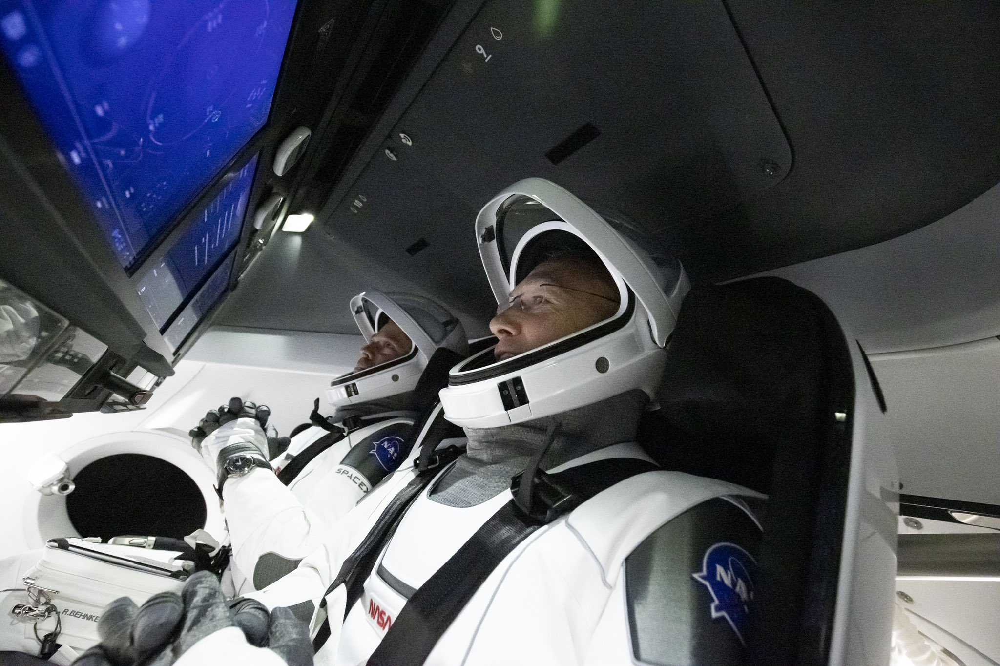
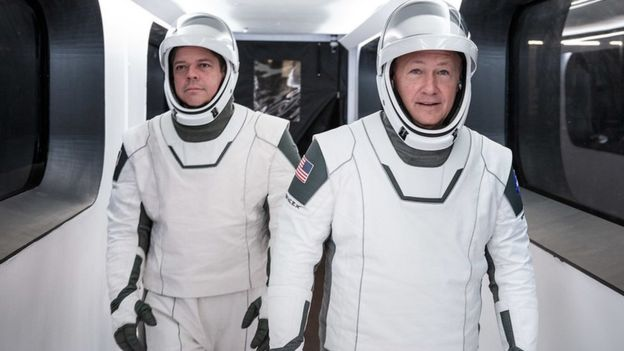

Interes

El Tesla Roadster de Elon Musk es un automóvil privado que fue adaptado como carga de prueba para el vuelo inaugural del cohete Falcon Heavy. El vehículo es un Tesla Roadster de primera generación producido en 2009 por Tesla, un fabricante de automóviles eléctricos estadounidense co-fundado por el propio Musk.


Los cohetes de SpaceX han ganado reconocimiento en los últimos años por su increible potencial, siendo capaces de romper los límites del entendimiento humano, volviendo lo imposible, posible.
Starlink es un proyecto de la empresa SpaceX para la creación de una constelación de satélites de internet con el objetivo de brindar un servicio de internet de banda ancha, baja latencia y cobertura mundial a bajo costo.
¿Que es SpaceX?
Es una empresa estadounidense de transporte aeroespacial fundada en 2002 por Elon Musk
Ha desarrollado los cohetes Falcon 1, Falcon 9 y Falcon Heavy los cuales han sido construidos con la meta de ser vehículos de lanzamiento espacial reutilizables. SpaceX también ha desarrollado la nave espacial Dragon que fue puesta en órbita por los vehículos de lanzamiento Falcon 9, también se encuentran desarrollando el BFR o Star Ship una nave la cual planea usar para enviar colonias de humanos en futuras misiones a Marte. SpaceX diseña, prueba y fabrica la mayor parte de los componentes por cuenta propia, incluyendo los motores de cohete Merlín, Kestrel y Draco.
SpaceX también se encuentra desarrollando Starlink, una constelación de satélites, mediante los cuales proveerá internet de banda ancha y baja latencia, con cobertura mundial.
Ultimas noticias
Lanzado con éxito el cohete espacial SpaceX por la NASA
La cápsula Crew Dragon, fabricada por la agencia SpaceX de Elon Musk, fue lanzada con éxito al espacio por la NASA en el segundo intento de una misión que el miércoles se tuvo que aplazar por el mal tiempo.
Leer más Cancelado el lanzamiento de la nave de SpaceX por mal tiempo
Finalmente el clima ha impedido que la nave Crew Dragon diseñada por SpaceX despegue hoy...
Leer más 